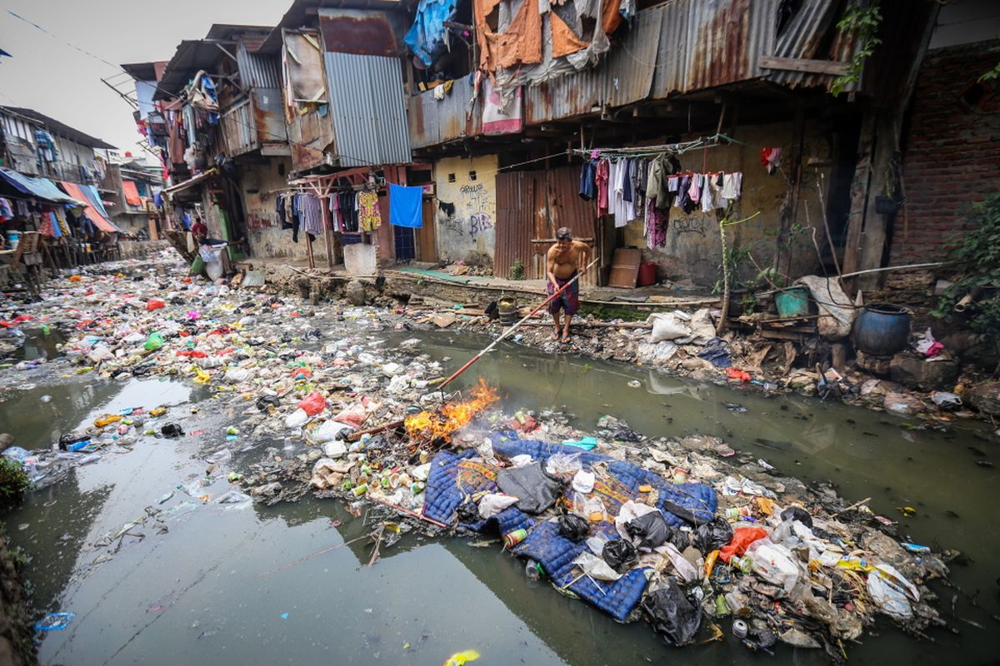

PRAKIRAAN MUSIM 2021-2022
Prakiraan Musim Hujan 2021/2022 pada 342 Zona Musim (ZOM) di Indonesia menunjukkan bahwa sebagian besar wilayah diprakirakan mengalami Awal Musim Hujan 2021/2022 pada kisaran bulan Oktober dan November 2021 sebanyak 232 ZOM atau 67,8% dari 342 ZOM.
Prakiraan Musim Hujan 2021/2022 pada 342 Zona Musim (ZOM) di Indonesia menunjukkan bahwa sebagian besar wilayah diprakirakan mengalami Awal Musim Hujan 2021/2022 pada kisaran bulan Oktober dan November 2021 sebanyak 232 ZOM atau 67,8% dari 342 ZOM.
Jika dibandingkan terhadap rata-ratanya selama 30 tahun (1981- 2010), Awal Musim Hujan 2021/2022 di sebagian besar daerah yaitu 157 ZOM (45,9%) diprakirakan maju, sedangkan wilayah lainnya diprakirakan sama terhadap rata-ratanya 132 ZOM (38,6%) dan mundur terhadap rata-ratanya sebanyak 53 ZOM (15,5%).
Sifat Hujan selama Musim Hujan 2021/2022 di sebagian besar daerah yakni sebanyak 244 ZOM (71,4%) diprakirakan Normal, sedangkan wilayah lainnya Atas Normal sebanyak 88 ZOM (25,7%) dan diprakirakan Bawah Normal sebanyak 10 ZOM (2.9%).
Puncak Musim Hujan 2021/2022 di sebagian besar wilayah Zona Musim (ZOM) diprakirakan terjadi pada bulan Januari dan Februari 2022 sebanyak 244 ZOM (71,3%).

Dari sejumlah bencana tersebut, tercatat warga menderita dan mengungsi 8.426.609 jiwa, luka-luka 14.116, meninggal dunia 665 dan hilang 95, sedangkan dampak kerusakan tercatat rumah sebanyak 142.179 unit, fasilitas umum 3.704, kantor 509 dan jembatan 438. Rincian kerusakan rumah yaitu rumah rusak berat 19.163 unit, rusak sedang 25.369 dan rusak ringan 97.647.
Melihat perbandingan jumlah bencana, bencana pada tahun 2021 ini lebih sedikit dibandingkan tahun lalu. Pada tahun lalu bencana berjumlah 4.649 kejadian, sedangkan pada tahun ini 3.092 atau turun 33,5 persen. Namun menjadi perhatian, jumlah populasi yang meninggal dunia lebih tinggi. BNPB mencatat korban meninggal pada tahun ini sebanyak 665 jiwa, atau naik 76,9 persen. Kenaikan tidak hanya pada jumlah korban jiwa tetapi juga korban luka-luka, warga terdampak dan mengungsi serta rumah rusak. Untuk itulah, pembelajaran dari rangkaian kejadian bencana diatas penting untuk dijadikan acuan bagi rencana kesiapsiagaan yang lebih baik di tahun-tahun ke depan.
Analisa Curah Hujan Bulan Mei 2021
Pada bulan Mei 2021 wilayah Indonesia Umumnya mengalami curah hujan dengan kriteria Menengah,hasil analis curah hujan pada bulan Mei 2021 menunjukkan 75%dari wilayah indonesia mengalami curah hujan kurang dari 300 mm/bulan.
Adapun dengan curah hujan lebih dari 300 mm/bulan meliputi sebagian aceh,sumatera Utara,Sumatera Barat,Riau,Kepulauan Riau,Bengkulu,Jambi bagian utara,bangka belitung,DKI,Jawa Barat bagian Barat,Kalimantan Barat,kalimantan Tengah,Kalimantan Selatan,Kalimantan Timur,Kalimantan Utara,Pulau Sulawesi,Maluku Utara,Maluku,Papua Barat,Dan Papua
Pada umumnya memiliki sifathujan Normal (N) hingga Atas Normal(AN).Hasil analisis sifat hujan pada bulan Mei 2021 menunjukkan bahwa 78% dari wilayah Indonesia memiliki sifat hujan Normal (N) hingga Atas Normal (AN).Sedangkan daerah dengan sifat hujan Atas Normal (AN) meliputi, Sumatera Utara bagian utara-tengah, Sumatera Selatan bagian selatan, Lampung bagian timur-selatan, Banten,Jawa Barat, Jawa Tengah, Jawa Timur, Bali, NTB, NTT, Pulau Kalimantan, Sulawesi Barat, Sulawesi Selatan, Sulawesi Tenggara, Sulawesi Tengah bagian barat, Maluku, dan Papua
curah hujan harian di Indonesia masih mengalami kriteria hujan lebat sebesar 37.52% dan hujan sangat lebat sebesar 5.29%.Secara umum, hampir seluruh wilayah Indonesia pada bulan Mei 2021 mengalami hujan
lebat. Hasil monitoring curah hujan ekstrem harian berdasarkan 5.448 titik pengamatan(Stasiun BMKG dan Pos Hujan kerjasama) menunjukkan kejadian hujan harian dengan kriteria lebat teramati sebanyak 37.52% dan hujan ekstrem dengan kriteria sangat lebat teramati sebanyak 5.29% dari sebaran titik observasi. Curah hujan >100 mm/hari terjadi di sebagian besar provinsi di Indonesia, kecuali Provinsi Kepulauan Riau, Kalimantan Utara,Gorontalo dan Nusa Tenggara Timur. Curah hujan tertinggi terjadi di Cikelet, Sukabumi,Jawa Barat pada tanggal 25 Mei 2021 sebesar 273 mm/hari.
Analisis Hari Tanpa Hujan Bulan Mei 2021
Hingga akhir bulan Mei 2021,sebanyak 77.4% titik pengamatan mengalami hari tanpa hujan,sedangkan 22.6% masih mengalami hujan.Analisis Hari Tanpa Hujan (HTH) sampai dengan 31 Mei 2021 menunjukan sebagian besar titik pengamatan mengalami hari tanpa hujan yaitu sebanyak 77.4% selanjutnya 22.6% masih mengalami hujan. Secara umum, 59.54% jumlah titik pengamatan telah mengalami HTH berturut-turut kategori sangat pendek, 7.7% kategori pendek, 2.4% kategori menengah, sedangkan HTH dengan kategori panjang sebanyak 2.8%, kategorisangat panjang sebanyak 4.9% dan kategori ekstrem panjang sebanyak 0.06%. HTH terpanjang terjadi di Pringgabaya, Lombok Timur, Provinsi Nusa Tenggara Barat selama 72 hari
Tabel Informasi Iklim Ekstrem bulan mei 2021
| Kalimantan Timur |
| Tanggal |
Suhu |
| 30 Mei 2021 |
35.5 C |
| Jawa Barat |
| Tanggal |
Curah |
| 25 Mei 2021 |
723mm |
| Jawa Timur |
| Tanggal |
Kecepatan Angin |
| 22 Mei 2021 |
36 Knot |
| Nusa Tenggara Timur |
| Tanggal |
Suhu |
| 30 Mei 2021 |
14 Mei 2021 |
| Tanggal |
Kelembapan |
| 27 Mei 2021 |
62.5% |
Analisis Curah Hujan Bulan Juli 2021
Pada bulan Juli 2021 wilayah Indonesia umumnya diprakirakan mengalami curah hujan dengan kriteria Menengah.Prakiraan curah hujan pada bulan Juli 2021 menunjukkan bahwa sebanyak 86% dari wilayah Indonesia diprakirakan mengalami curah hujan kurang dari 300 mm/bulan.Sedangkan daerah yang diprakirakan mengalami curah hujan lebih dari 300 mm/bulan meliputi sebagian Aceh, Sumatera Utara bagian utara, Sumatera Barat, Kalimantan Utara bagian utara,Sulawesi Selatan bagian utara, Sulawesi Barat, Sulawesi Tenggara bagian utara, Sulawesi Tengah,Gorontalo, Sulawesi Utara, Maluku Utara, Maluku, Papua Barat dan Papua.
Wilayah Indonesia umumnya diprakirakan memiliki sifat hujan Normal (N) hingga Atas Normal (AN).Prakiraan sifat hujan pada bulan Juli 2021 menunjukkan bahwa sebanyak 87% dari wilayah Indonesia diprakirakan memiliki sifat hujan Normal (N) hingga Atas Normal (AN).Sedangkan daerah yang diprakirakan memiliki sifat hujan Bawah Normal (BN) meliputi sebagian Sumatera Utara, Riau, Sumatera Barat bagian barat, Jambi bagian utara, Sumatera Selatan, Banten, Jawa Barat bagian barat, Jawa Tengah, Jawa Timur, Bali, NTT, NTB,Kalimantan Barat bagian tengah, Kalimantan Utara bagian utara, Kalimantan Timur bagian timur,Sulawesi Selatan, Sulawesi Tengah, Maluku, Papua Barat dan Papua.
Analisis Curah Hujan Bulan Agustus 2021
Pada bulan Agustus 2021 wilayah Indonesia umumnya diprakirakan mengalami curah hujan dengan kriteria Menengah.Prakiraan curah hujan pada bulan Agustus 2021 menunjukkan bahwa sebanyak 83% dari wilayah Indonesia diprakirakan mengalami curah hujan kurang dari 300 mm/bulan.Sedangkan daerah yang diprakirakan mengalami curah hujan lebih dari 300 mm/bulan meliputi sebagian Aceh, Sumatera Utara, Sumatera Barat, Bengkulu bagian utara, Kalimantan Barat bagian utara, Kalimantan Timur bagian barat, Kalimantan Utara, Sulawesi Utara bagian selatan,Gorontalo bagian selatan, Sulawesi Tengah, Sulawesi Barat, Sulawesi Tenggara bagian utara,Maluku Utara, Papua Barat dan Papua.
Wilayah Indonesia umumnya diprakirakan memiliki sifat hujan Normal (N) hingga Atas Normal (AN).Prakiraan sifat hujan pada bulan Agustus 2021 menunjukkan bahwa sebanyak 88% dari wilayah Indonesia diprakirakan memiliki sifat hujan Normal (N) hingga Atas Normal (AN).Sedangkan daerah yang diprakirakan memiliki sifat hujan Bawah Normal (BN) meliputi Sumatera Utara bagian utara, Riau bagian utara, P. Belitung, Banten, Jawa Barat, Jawa Tengah, Jawa Timur, Bali, NTB, Sulawesi Selatan, Maluku, Papua Barat dan Papua.
Analisis Curah Hujan 2021
Pada bulan September 2021 wilayah Indonesia umumnya diprakirakan mengalami curah hujan dengan kriteria Menengah. Prakiraan curah hujan pada bulan September 2021 menunjukkan bahwa sebanyak 72% dari wilayah Indonesia diprakirakan mengalami curah hujan kurang dari 300 mm/bulan. Sedangkan daerah yang diprakirakan mengalami curah hujan lebih dari 300 mm/bulan meliputi Aceh, Sumatera Utara, Sumatera Barat, Bengkulu, Kalimantan Barat, Kalimantan Tengah bagian utara, Kalimantan Timur bagian barat, Kalimantan Utara, Sulawesi Utara bagian barat, Sulawesi Tengah, Sulawesi Barat, Maluku Utara, Maluku, Papua Barat dan Papua
Wilayah Indonesia umumnya diprakirakan memiliki sifat hujan Normal (N) hingga Atas Normal (AN). Prakiraan sifat hujan bulan September 2021 menunjukkan bahwa sebanyak 92% dari wilayah Indonesia diprakirakan memiliki sifat hujan Normal (N) hingga Atas Normal (AN). Sedangkan daerah yang diprakirakan memiliki sifat hujan Bawah Normal (BN) meliputi Sumatera Utara, Riau bagian utara, Sumatera Selatan, Banten, Jawa Barat, Jawa Tengah, Jawa Timur, Bali, NTB, NTT, Sulawesi Selatan bagian utara, Maluku, Papua Barat dan Papua.
Data Curah Hujan Mei 2021 Beberapa Daerah di Indonesia
Data Curah Hujan Bulan Juli s/d September 2021 Beberapa daerah di Indonesia


Sepanjang 2021 BNPB mencatat 3.092 kejadian yang didominasi bencana hidrometeorologi. Bencana yang paling sering terjadi yaitu banjir dengan 1.298 kejadian, disusul cuaca ekstrem 804, tanah longsor 632, kebakaran hutan dan lahan 265, gelombang pasang dan abrasi 45, gempa bumi 32, kekeringan 15 dan erupsi gunung api 1.
Berikut Adalah Data Cuaca Dan Banjir Pada Tahun 2021:
| No. |
NAMA PROVINSI |
BANJIR |
BANJIR BANDANG |
| 1 |
ACEH |
1435 |
81 |
| 2 |
SUMATERA UTARA |
732 |
52 |
| 3 |
SUMATERA BARAT |
342 |
65 |
| 4 |
RIAU |
455 |
1 |
| 5 |
JAMBI |
476 |
17 |
| 6 |
SUMATERA SELATAN |
380 |
36 |
| 7 |
BENGKULU |
171 |
15 |
| 8 |
LAMPUNG |
328 |
23 |
| 9 |
KEP. BANGKA BELITUNG |
59 |
0 |
| 10 |
KEP. RIAU |
61 |
1 |
| 11 |
DKI JAKARTA |
109 |
0 |
| 12 |
JAWA BARAT |
1193 |
100 |
| 13 |
JAWA TENGAH |
1249 |
69 |
| 14 |
JAWA TIMUR |
1176 |
96 |
| 15 |
DI YOGYAKARTA |
50 |
1 |
| 16 |
BANTEN |
419 |
41 |
| 17 |
BALI |
39 |
5 |
| 18 |
NUSA TENGGARA BARAT |
187 |
54 |
| 19 |
NUSA TENGGARA TIMUR |
570 |
151 |
| 20 |
KALIMANTAN BARAT |
864 |
22 |
| 21 |
KALIMANTAN TENGAH |
735 |
9 |
| 22 |
KALIMANTAN SELATAN |
929 |
31 |
| 23 |
KALIMANTAN TIMUR |
343 |
5 |
| 24 |
KALIMANTAN UTARA |
200 |
0 |
| 25 |
SULAWESI TENGAH |
288 |
37 |
| 26 |
SULAWESI UTARA |
567 |
57 |
| 27 |
SULAWESI TENGAH |
620 |
52 |
| 28 |
SULAWESI TENGGARA |
240 |
10 |
| 29 |
GORONTALO |
259 |
24 |
| 30 |
SULAWESI BARAT |
125 |
7 |
| 31 |
MALUKU |
153 |
2 |
| 32 |
MALUKU UTARA |
270 |
20 |
| 33 |
PAPUA BARAT |
138 |
0 |
| 34 |
PAPUA |
204 |
9 |
FAKTOR PENYEBAB UTAMA BANJIR
Intensitas Hujan Yang Tinggi
Curah hujan yang tinggi dan dalam waktu yang lama menjadi faktor utama terjinya banjir, biasanya terjadi saat memasuki puncak musim hujan. Akibat hujan lebat, sungai menjadi meluap selain itu minimnya daerah resapan air membuat air akan semakin tidak tertampung dan terjadi banjir.
Sampah Yang memenuhi Sungai

Masyarakat masih memiliki kebiasaan buruk yang sulit hilang yaitu membuang sampah ke sungai, sampah yang menumpuk membuat aliran sungai terganggu sehingga saat hujan deras air akan meluap ke pemukiman warga
Kerusakan Lahan
Seperti yang terjadi di beberapa wilayah, banyak kejadian banjir dan tanah longsor karena ulah perusakan lahan untuk penambangan liar. Tanah yang seharusnya jadi penahan air menjadi tergerus dan menyebabkan banjir.
Penebangan Hutan

Hutan sangat berperan sebagai daerah resapan air sehingga akan mengurangi banjir karena hutan akan menyimpan air hujan kemudian mengalirkan kepada manusia melalui bentuk air tanah. Bila hutan terus ditebangi secara liar akan menimbulkan banjir bagi kawasan daerah tersebut, dengan banjir yang terus terjadi dengan skala besar maka ada kemungkinan menyebabkan tanah longsor.
Pembangunan Pemukikam di Bantaran Sungai
Di Jakarta banjir yang terjadi akibat adanya faktor dari ulah manusia seperti pembangunan pemukiman di bantaran sungai, pemukiman sembarangan menjadi faktor penyebab banjir yang utama akibat meluapnya aliran sungai yang terhambat. Seperti rumah-rumah di bantaran yang pasti menjadi penyumbang sampah terbesar yang menjadi penghambat dan pendangkalan.
Cara Mengatasi Banjir
Jangan membuang sampah ke sungai dan selokan
Penting untuk menjaga sungai dan selokan tetap bersih agar mampu menampung debit air tinggi ketika musim hujan. Sayangnya, ada yang suka membuang sampah sembarangan ke sungai atau selokan. Ini akan membuat sungai dan selokan tersumbat dan berkurang kapasitasnya untuk menampung air.
Hindari membuat bangunan di pinggir sungai
Saat ini semakin banyak yang membangun di pinggir sungai, padahal itu bisa menyebabkan banjir. Pembangunan rumah atau bangunan di pinggir sungai akan mempersempit sungai. Selain itu, sampah rumah tangga berpotensi masuk ke dalam sungai.
Tebang pilih dan reboisasi
Setelah menebang pohon, sebaiknya ditanam lagi pohon yang baru. Utamakan menanam pohon berakar besar yang bisa menyerap air dengan cepat.
Memperbanyak lahan terbuka hijau6
Perkotaan jauh dari hutan. Lahan terbuka hijau di perkotaan bisa menggantikan hutan dan menambah daerah resapan di perkotaan agar terhindar dari banjir. Area ini bisa ditanami berbagai pohon yang baik untuk menyerap air.
Menjaga dan membersihkan saluran air secara rutin
Perawatan saluran air dan membersihkannya secara rutin bisa mencegah banjir. Cara ini bisa dilakukan secara bergotong royong oleh warga di sekitar saluran air tersebut. Hal ini bertujuan untuk memastikan bahwa saluran air siap menampung jika curah hujan meninggi sehingga tidak terjadi banjir. Itu dia cara mencegah banjir yang bisa kita lakukan. Semoga kita terhindar dari banjir, ya.